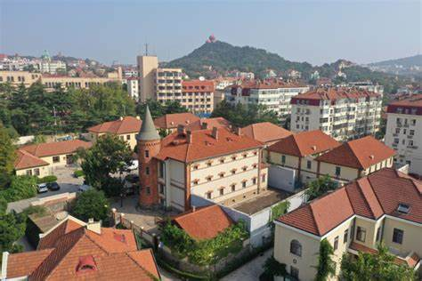
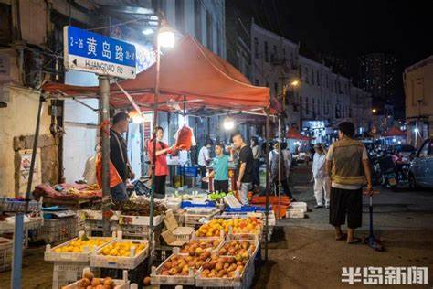
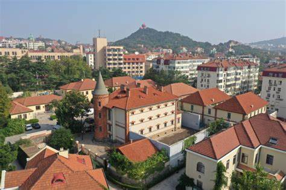
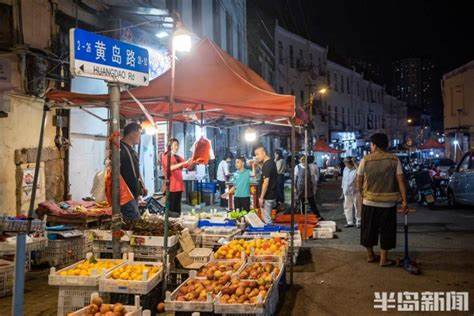
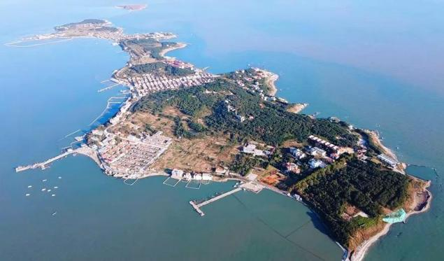
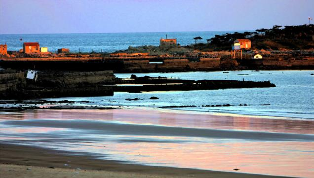
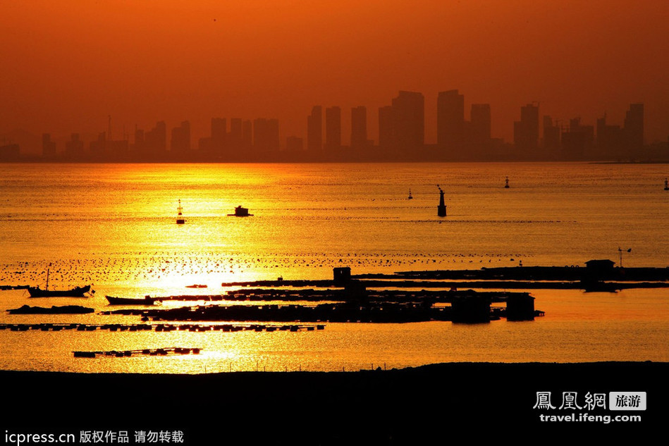
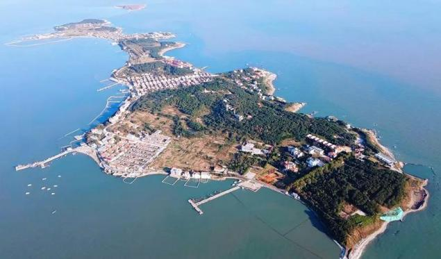
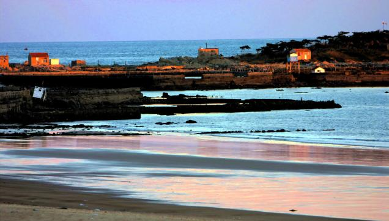
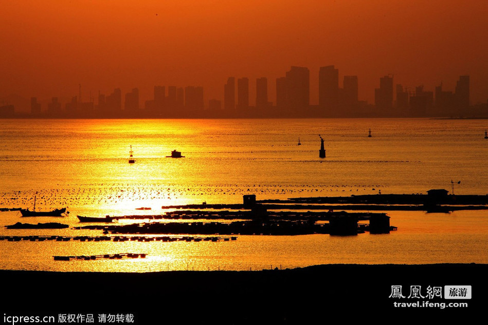

地图
五大特质
- 红色基因
- 万国融萃
- 别样复古
- 锐意进取
- 青春前卫
-
红色基因
-风起云涌的革命热土-
1.追溯红色历史
青岛作为近代中国的重要港口城市和通商口岸，是西方文化和思想传入的重要窗口。在这里，随着十月革命的到来与五四运动、新文化运动的蓬勃开展，马克思主义思想逐渐在青岛本土生根发芽，为青岛的革命运动奠定了理论基础。随着近代民族资本主义工业的发展，青岛的工人阶级日益壮大，他们逐渐意识到自身的力量，并开始组织起来，为争取自身权益而斗争。
正是在这样的时代背景下，中国共产党在青岛积极组织工人运动，通过罢工、游行等方式，打击了反动阶级和帝国主义势力，为青岛的革命事业做出了重要贡献。1923 年 8 月，中共青岛组的建立标志着青岛红色文化的历史起点。这一时期的青岛，在中共一大代表邓恩铭、王尽美等人的努力下，党组织迅速在工人和知识分子中发展，为青岛的革命事业奠定了坚实的基础。青岛党组织把主要精力放在组织工人运动上，开展了声势浩大的反帝反封建斗争，掀开了青岛革命史上的新篇章。
1937 年，抗日战争全面爆发，青岛成为了抗日前线的重要城市之一。青岛人民在党的领导下，奋起抗日，积极参与抗日斗争，为保卫祖国、争取民族解放做出了巨大贡献。
在解放战争中，青岛人民在中国共产党的领导下，与国民党反动派展开了殊死斗争，最终迎来了青岛的新生。青岛人民在党的领导下，积极投身革命斗争，为青岛的解放和新中国的成立做出了重要贡献。
新中国成立后，青岛人民在党的领导下，积极投身社会主义革命和建设。他们自力更生、艰苦创业，不仅创造了一个又一个重大成就，也逐步形成了门类较为齐全、基础较为雄厚的工业体系。
进入新时代以来，青岛市委坚持以习近平新时代中国特色社会主义思想为指导，全面贯彻新发展理念，推动经济社会高质量发展。青岛人民在党的领导下，继续发扬革命传统和红色精神，为实现中华民族伟大复兴的中国梦而努力奋斗。青岛港加快向枢纽港、贸易港、金融港转型升级，青岛胶东国际机场启用，上合示范区、山东自贸试验区青岛片区等开放平台加快建设，城市发展活力持续迸发。
2.时代需求与代表性电影内容
在中国共产党领导青岛工人运动，将马克思主义思想与党的理念传播入青岛市民的过程中，影视媒介起到了不可忽视的作用。如果化用瓦尔德拉达的寓言，那么影视不仅与城市相伴相生，更是与中国共产党在青岛、在全中国筚路蓝缕的革命事业一脉相乘，携手同行。优秀的左翼影视文学，不仅展现出近现代青岛的红色基因与优良革命传统，同时也折射出在不同时期中国共产党的革命、建设热情与斗争智慧。
2.1 革命思想的宣传
影视媒介起到了对革命思想的宣传作用，如 1935 年由田汉、夏衍编写的《风云儿女》故事片，通过对辛白华与梁质夫心路历程的细腻描述，展现出在内忧外患时代背景下青岛小知识分子的迷惘与抉择，梁质夫的革命大无畏精神与爱国主义精神唤醒了辛白华曾经纸迷金醉的灵魂，最终引导他也走向一条抗争救国的道路。这体现出中国共产党对青岛知识分子的革命引领与思想建设。正是通过这一系列影片，中国共产党在青岛地区宣传了革命思想，扩大了自身的影响力，为革命事业的发展奠定了群众基础。
2.2 中国共产党的形象塑造
影视媒介起到了对中国共产党的形塑功能，如 2011 年拍摄的《岛城风云》一片，通过对以陈勇为代表的八路军在保护国家财产，抗击日本侵略者中所展现出的爱国主义与革命主义精神进行细致描绘，展现出中国共产党自身作为革命领导者和民族国家代言人的形象。进一步深化了人民群众对于青岛地区中国共产党爱国与抗争精神的认识。
2.3 广大青岛市民的启蒙
影视媒介起到了对青岛市民的启蒙作用：青岛的革命运动不仅唤醒了市民的自治意识和民族共同体意识，还激发了阶级身份和斗争意识，为青岛的革命事业注入了新的活力。
2.4 社会各阶层的联合
影视媒介推动了各阶层、各身份爱国志士的联合：如 1934 年拍摄的《同仇》电影，借殷小芬之口，将国家的命运置于个人的恩怨情仇之上，展现出了青岛人民与中国人民之间密不可分的血肉联系，深刻反映出近代“民族国家”精神的兴起与蓬勃发展。
基于青岛文化特质中红色基因的影视，其中的故事情节和人物形象往往以真实的历史事件和人物为原型，通过艺术加工，展现了青岛革命时期的真实面貌。其次，在选取青岛文化特质时，其注重挖掘青岛的历史底蕴和文化内涵，通过电影语言进行艺术呈现，从而传递了积极向上的价值取向，进一步引导观众思考青岛的优良革命传统与优秀文化遗产。再次，这些影视作品在呈现青岛文化特质时，注重创新和发展，通过近现代技术手段和艺术手法，将青岛的文化遗产进行创造性转化，使其更加符合近现代观众的审美需求与现实需要。最后，这些影视作品中映射出近现代青岛市民集体观念与近现代中国的国民国家意识，大大增强了观众的民族自豪感和国家认同感。
3.意义和价值
影视作为文化传播的重要载体，与青岛的红色基因密切相关。通过电影的艺术呈现，可以深入挖掘和传承青岛的红色基因，推动青岛革命历史的传承和发展。
3.1 对中国共产党
从中国共产党的角度来看，青岛的革命历史是中国共产党领导革命斗争的重要篇章之一。影视作品扩大了对青岛红色基因的宣传力度，可以进一步加深人民对党的历史和革命精神的理解，增强党的凝聚力和战斗力。
3.2 对中国工人运动
从工人运动角度来看，青岛工人运动是中国工人运动的重要组成部分。影视作品展现出青岛工人运动的历史和发展，为新时代的工人组织建设提供了宝贵的经验和启示。
3.3 对青岛市民
从青岛市民角度来看，青岛的红色基因是青岛市民群体的宝贵精神财富。影视作品通过描绘和弘扬青岛的红色基因，可以激发青岛市民的爱国热情和奋斗精神，进一步推动青岛市民精神信念的坚定发展。
3.4 对青岛社会文化
从青岛社会文化角度来看，青岛的红色基因是青岛社会的重要文化标志之一。影视作品通过描绘和弘扬青岛的红色基因，可以推动青岛社会的红色文化建设与社会精神文明高质量发展，赋予青岛繁荣发展新动能。
3.5 对红色基因的传播
从红色基因传播的角度来看，青岛的红色基因不仅属于青岛和山东，也属于全中国乃至全世界。影视作品通过描绘和弘扬青岛的红色基因，可以展示中国革命的伟大历程和中国人民的英勇奋斗精神，为世界和平与发展事业做出积极贡献。
电影目录
电影介绍
《劫后桃花》1935 万国融萃
前清遗老祝有为（徐莘园饰），在青岛海滨建有花园别墅（今位于山海关路21号）。时德国侵占青岛，他为保房产利用汪翻译（孙敏饰）对女儿瑞芬（胡蝶饰）的心意。瑞芬虽憎恶汪的为人，但为父故，只得敷衍周旋。在祝家种花的刘花匠（高占非饰）爱慕瑞芬，因斥责汪之汉奸行为，被迫远走他乡。 一战后，日本取代德国占领青岛，汪摇身一变，投靠日本，反诬祝老，祝老被逮捕，别墅被没收改作“日本军人俱乐部”。祝太太（舒绣文饰）无奈携女儿暂避乡间。时局稍定后，瑞芬与母亲返回青岛，因一时生活无靠，赖曾在祝家任家庭教师的李先生（龚稼农饰）接济。其时，经常向祝家借贷的表侄余家骧（王献斋饰）已成为日本军部一名爪牙，他以营救祝老出狱为条件， 趁机求娶瑞芬。后来李先生设法救出祝老，并与瑞芬有情人终成眷属。数年以后，青岛回归祖国。祝太太等人来到旧居门前，人事全非，庭院桃花依旧。
剧照:
现状:
《风云儿女》1935红色基因
辛白华与好友梁质夫均为东北人，“九·一八”后漂泊异乡，保持乐观，互助前行。他们帮助贫困的阿凤母女。梁质夫因革命被捕，辛白华则与富孀史夫人相恋。阿凤母亡，辛白华助其入学，后阿凤加入歌舞班巡演。梁质夫出狱后投身抗日，辛白华则避居史夫人家，并在青岛偶遇阿凤演出《铁蹄下的歌女》，受到触动但未彻底觉醒。得知梁质夫牺牲，辛白华终于放弃享乐，投身抗日前线。
剧照:
现状:
《浪淘沙》1936锐意进取
水手阿龙回家撞见妻子通奸，怒杀奸夫后潜逃。几番周折，他改名换姓在商船上做伙夫，却又被警探老章发现。轮船沉没后，阿龙与老章流落荒岛，共渡难关，敌意渐消。但当救援船只出现，老章却突然铐住阿龙。然而船只并未靠近，两人最终因缺水困死荒岛，留下两具带手铐的骷髅。
剧照:
现状:
《到自然去》1936红色基因
北洋舰队周将军每月举办“平等茶花会”，让家人与仆人互换身份。一次，他与女儿、博士、艺术大师、仆人马龙和丫鬟阿梅乘游艇出游，遇飓风漂至荒岛。马龙展现出领导才能，指挥众人生活有序，并赢得四位女性爱慕，包括爱上他的大小姐丽华。获救回城后，身份恢复，马龙离开将军府，丽华勇敢追随。
剧照:
现状:
《斩断魔爪》1953万国融萃
1950年，东北军工厂工程师周昌民研发新型防空武器。台湾国民党特务白秉忠冒充周昌民老友侄儿潜入工厂，窃取图纸钥匙模被公安监视。特务何主教指使偷配钥匙被发现，董厂长加强安保。白秉忠盗走假图纸并企图诱骗周昌民去香港，但周昌民报告董厂长并得知真相。何主教见败露，令白秉忠刺杀周昌民并派人暗杀白秉忠灭口。公安部门在群众协助下将特务一网打尽。
剧照:
现状:
《李四光》1979青春前卫万国融萃
在温馨的房间内，著名地质学家李四光白发苍苍却精神饱满地工作，妻子许淑彬劝他别太劳累。李四光带妻子到钢琴前回忆往昔，想起1918年他放弃国外优渥待遇，毅然回国在北大任教，并发现第四纪冰川化石，却遭遇质疑和感情危机。后在中国迎来曙光时，周总理关怀下，李四光继续为理想奋斗。
剧照:
现状:
《第二次握手》1980万国融萃
1956年秋，华侨打扮的丁洁琼来到苏冠兰教授家，苏教授惊讶又痛苦，而夫人叶玉菡热情接待。原来，两人在1928年因共同志向相爱，但因苏父干预和外界阻挠，丁洁琼被迫独自赴美。在美国，丁洁琼获博士学位但因反对原子弹使用被监禁，与苏冠兰失去联系。苏父谎称丁已结婚，苏冠兰后与叶玉菡成婚。丁洁琼回国后得知真相，痛苦离开，决定去边疆科研。最终在周总理关怀和科学界友人劝慰下，丁洁琼放下个人不幸，与苏冠兰夫妇和解并振作起来。
剧照:
现状:
《风流女谍》1989万国融萃
川岛芳子，肃亲王之女，肃亲王为勾结日本复辟清朝的江山，将女儿过继给日本军国主义分子、浪人政客川岛浪速。川岛对她进行了一系列的间谍训练。一日，成为少女的芳子被川岛强暴。决定和恋人卧轨自杀的芳子在最后关头本能逃离。自此，川岛芳子将自己的一切作为间谍武器，制造了多起震惊中外的事件。抗战胜利后，入狱后的她希望日方提供国籍证明好摆脱汉奸罪。但面对没有利用价值的她，日本军国主义者却遗弃了她……
剧照:
现状:
《宋庆龄和她的姊妹们》1990万国融萃
在中国漫长的历史上，有过一个显赫的家族，在六位兄弟姐妹中出了两位第一夫人、一位财政部长，三位女婿则是中国近代史上赫赫有名的孙中山、蒋介石以及孔祥熙，这个家族就是著名的宋氏家族。宋霭龄、宋庆龄和宋美龄。她们那充满神奇的魅力，那典雅端庄的风采、那悲欢离合的一生，都被世人认为是东方之谜。本剧将要叙述的就是发生在这个家族中被世人称为东方之谜的动人故事……
剧照:

现状:
《二马》1999万国融萃
老马和小马为继承遗产到伦敦，寄居在温都太太家。老马和小马分别对温都太太和女儿玛力产生了感情。老马虽得到温都太太好感，但因种族和文化偏见，婚事未成。小马狂爱玛力，但玛力从未正眼瞧他，认为爱上中国人很荒唐。小马只在玛力醉酒时吻了她，但被误认为是别人。最终，伤心的小马离开了伦敦。
剧照:
现状:
《大染坊》2003青春前卫万国融萃
清末，山东周村的孤儿陈六子聪明善良，受民间文化熏陶。他得到琐子叔照顾，结识日后的工业家苗翰东。一次冻昏在通和染坊门口，被周掌柜收留并改名陈寿亭，与周掌柜的女儿采芹亲如兄妹。陈寿亭偷学染布手艺后，说服周掌柜辞退心术不正的刘师傅。十年后，他在印染业成名，在青岛、济南办厂，抓住“民族工业春天”发展事业，与不良势力斗智斗勇。事业巅峰时，抗日战争和济南沦陷让他陷入绝望，几乎吐血身亡。
剧照:
现状:

《跑马场》2012万国融萃
1913年，袁世凯刺杀宋教仁后，图苏里等革命党人密谋报复袁世凯，但行动失败，图苏里受伤逃亡，被袁和革命党双重追杀。他在泰山被左小妹救起后改名左天一，逃到青岛却遭德国警察抓捕修筑炮台山堡垒。左天一策划逃亡失败被判死刑，但在绞刑前被小恭亲王溥伟认出并获救。溥伟让左天一代表清朝复辟派与革命党人左天亮进行赛马，争夺青岛跑马场经营权，青岛跑马场成为特殊战场。
剧照:
现状:

《青岛往事》2015万国融萃
潍县少年满仓被天佑母亲救下，与天佑和夏德发成为好友。三人合作赢得第一桶金，合开商行“德佑聚”，经历商场起伏和兄弟矛盾后重归于好，共同打击日本商人。抗战爆发后，三兄弟各奔前程，满仓留在青岛，与妻子小嫚和岳父姜傻子坚强生活。
剧照:
现状:

《诱捕之后》1982别样复古万国融萃
抗战前夕，青岛地下党农运部长被捕。牙医丁建堂收到告警，其妻带回古瓶和纸条。丁判断有新人接头，但慈云轩拒绝兑换。义弟夏东岳出现，表明身份和任务。夏在苏瑞娟帮助下探监，但被打断。夏制服敌特后暴露被捕，后逃脱。夏向新领导汇报，找到交通员鲁成顺。鲁汇报武器购买情况，安排夏隐藏。夏偶然发现丁建堂叛变。丁误以为神父是新领导，骗走古币接头，企图杀苏灭口，但被识破。叶玉芝经考验，与夏等带武器前往崂山准备战斗。
剧照:
现状:
《闯江湖》1984别样复古
抗战时期，天津评戏班子“义亭社”张、杨两家亲如一家。张义亭之女银灵芝嫁土匪李司令并放弃唱戏，父女断绝关系。灵芝发现丈夫真面目。张义亭义子张乐天与杨彩霞青梅竹马，终成眷属但因生计分居。资本家王五陵看中彩霞，彩霞公开关系得罪王五陵，全家逃青岛。青岛战乱，乐天卖血维生，彩霞为家人典身给奸商。日降后全家回津，灵芝遭遗弃。王五陵又想强占彩霞之妹金香，乐天等人救金香时杀王五陵，全家再逃。最终，彩霞与家人团聚。
剧照:
现状:
《中华英雄》1988别样复古
1945年抗战后，小杰从东北到青岛投靠老张。老张拉黄包车为生，两人情深。美军进驻青岛，军官汉斯横行霸道，小杰为救伤兵被撞，众人焚车泄愤。在酒吧，小杰击败挑战的美拳手贝利，贝利怀恨。贝利乘老张车时轻薄老张女儿小芮，老张愤怒摔车，被贝利重伤。贝利设计陷害小杰成为拳靶子，汉斯亲自挑战小杰，打斗引发群殴。贝利欲杀小杰，被小芮救下。小杰助老张与小芮团聚，但贝利掳走小芮，老张被杀，小芮也身亡。小杰欲报仇被制止，后越狱严惩贝利和汉斯，把贝利送入熔炉，仅留汉斯一命。
剧照:
现状:

《少年往事》2002青春前卫万国融萃
1928年，青岛，13岁的方忆琳拾到尧永诺的小提琴，两人从误会到成为好友。因同学取笑和母亲逼婚，忆琳离家出走找永诺商量，永诺安置她并互相分享梦想。忆琳想流浪欧洲，永诺想研习小提琴。忆琳鼓励永诺找小提琴大师唐远译学艺。忆琳妈妈找女儿，她决定提早去欧洲，同学为她筹旅费。临行前，永诺作曲送别，两人意识到彼此间的爱意。少年离别成永别，方忆琳再未遇尧永诺，但她守承诺，尧永诺的音乐流传民间。
剧照:
现状:

《美人依旧》2005别样复古万国融萃
在李家，璎子和小菲是同父异母的姐妹。璎子身为大小姐，生活富足，气质高贵；而小菲则是佣人庶出，虽美貌但身世坎坷。十五年后，小菲被召回李家，与已长成姣艳妩媚的大小姐璎子重逢。两姐妹同时爱上了赌场老板黄先生，他魅力十足却随意，让女人为他疯狂。小菲虽不认同姐姐的生活态度，却也不由自主地陷入情欲旋涡。最终，她选择极端方式，不惜一切代价追求真爱，甚至不惜摧毁周围人和自己。
剧照:
现状:
 




《父母爱情》2014青春前卫红色基因万国融萃
《父母爱情》讲述了海军军官江德福与资本家小姐安杰在青岛相遇、相爱并结婚的故事。两人克服出身、文化和生活环境差异，共同抚养五个孩子，历经文革等考验，始终相互支持、深爱对方。最终，他们回顾一生，感到无比幸福，故事展现了夫妻深情和家庭温暖。
剧照:
现状:
 





《卡尔马克思》2021青春前卫万国融萃
卡尔·马克思1818年生于德国特里尔的律师家庭，曾在波恩和柏林大学学习，获哲学博士学位。他作为自由撰稿人和报纸编辑，转向政治经济学和共产主义理论。1843年与贵族小姐燕妮结婚，共同经历流亡和困苦，期间写出《资本论》。他与恩格斯共同创立共产主义理论，起草《共产党宣言》，并为无产阶级解放事业奋斗。1883年，马克思在伦敦逝世，但其思想影响深远。
现状:


《大浴女》2007别样复古万国融萃
《大浴女》（电视剧）（2007）上世纪七十年代初，文革期间，尹亦寻和妻子章妩被送到干校劳动，子女留在城里。几年后，章妩回城看病时与唐医生产生感情，被女儿小跳发现并告知尹亦寻。尹亦寻回城后亲眼目睹了奸情。章妩决定断绝关系，但发现自己怀孕，生下了非尹亦寻的女儿尹小荃，从此家庭陷入痛苦和纠结。
剧照:
现状:
《功勋》2021红色基因万国融萃
《功勋》讲述8位“共和国勋章”获得者的人生故事，分为八个单元，展现他们的责任担当和精神境界。其中，《黄旭华的深潜》在青岛拍摄，呈现黄旭华奉献一生研制核潜艇的艰难历程。
剧照:
现状:

《抓娃娃》2024别样复古锐意进取
该片讲述生活在西虹市的富翁马成钢和春兰夫妇，为了将儿子马继业培养成合格的家族接班人，决定隐藏真实财富、装作保洁，开启反向养娃之路的故事。
剧照:
现状:


《海天雄鹰》2024青春前卫红色基因
该剧讲述了几位顶尖青年飞行员传承了老一辈的“海空雄鹰精神”，率领中国舰载机机群在辽阔海空上展翅翱翔的故事。
剧照:
现状:

《美好的日子》2021锐意进取
该剧讲述了一代又一代的青年为理想投身中国机车工业的发展，在这项美好的事业中收获灿烂人生图景的奋斗故事。
剧照:
现状:
《流浪地球2》2023青春前卫锐意进取
围绕《流浪地球》前作展开，该片以提出计划将建造1万座行星发动机的时代为故事背景，讲述了“太阳危机”即将来袭，世界陷入一片恐慌之中，万座行星发动机正在建造中，人类将面临末日灾难与生命存续的双重挑战故事。
剧照:
现状:
《最好的我们》青春前卫别样复古万国融萃
该片是根据八月长安的同名小说改编而成，主要讲述了名为耿耿和余淮的两个高中生，因为名字中的巧合而相识。他们在高中三年的时光里共同经历了成长，经历了分别，最终又重逢的故事。
剧照:

现状:
《你好旧时光》2017青春前卫
该剧讲述了耿耿余淮隔壁班余周周、林杨和他们身边的小伙伴们在振华中学里经历种种喜怒哀乐并共同成长的青春故事。
剧照与现状:


《南来北往》2024锐意进取
该剧讲述离乡十年归来的老刑警马魁与年少气盛优秀的年轻乘警汪新，师徒二人从相互不满，矛盾重重，误解不断到携手作战，默契配合。通过一列火车的人生百态，一群邻里间的人情冷暖，见证伟大祖国的革新与发展，新老两代铁路干警警魂精神薪火传承的故事
剧照:
现状:
《送你一朵小红花》2020青春前卫
该片以两个勇敢面对癌症的家庭为叙事背景，讲述了因长期与脑瘤抗争而形成悲观孤僻性格的韦一航，在同样罹患脑瘤的伙伴马小远的积极鼓舞和支持下，逐渐走出了内心的阴霾，重新与家人朋友建立了深厚的情感联系的故事。